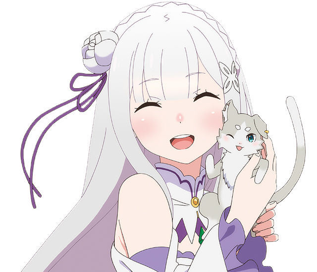
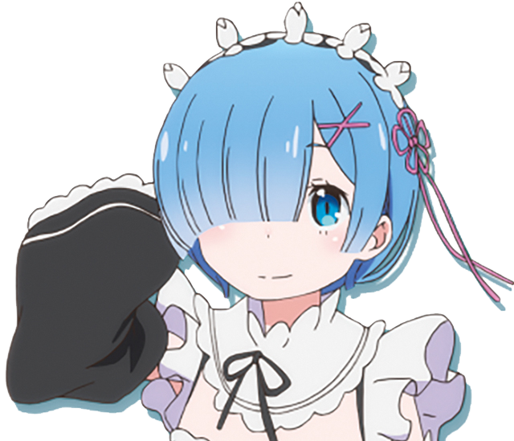
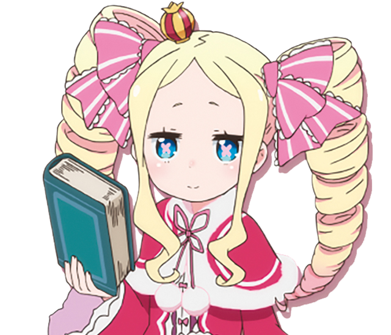

Re:Zero
− Starting Life in Another World
Plot
Subaru Natsuki is a NEET who does nothing but play games. One night, after visiting a convenience store, he is suddenly summoned to another world. With no sign of who summoned him, he soon befriends a silver-haired half-elf girl who introduces herself as Satella, and her companion Puck. Satella mentions that her insignia was stolen by a thief named Felt. When he and “Satella” are mysteriously killed, Subaru awakens and discovers that he has acquired an ability which he names “Return by Death,” enabling him to reverse time by dying. He greets “Satella” again, only for her to be offended at being addressed by the name “Satella,” which in fact refers to the “Witch of Envy,” and is considered a taboo. With the help of Reinhard (a knight) in another timeline, Subaru saves “Satella’s” life from the assassin Elsa; she reveals that her real name is Emilia, and as a token of gratitude, Felt returns the insignia to her.
Character
Subaru Natsuki |

Emilia |

Rem |
Ram |

Beatrice |
Felt |